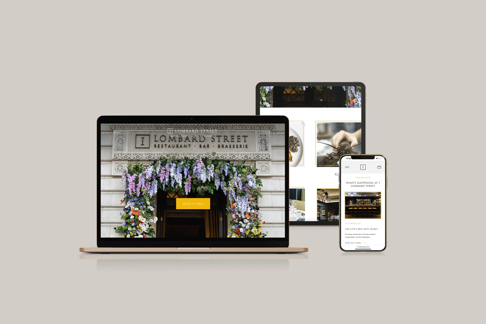

- Home
- Services
- Website design
- Restaurant website design
Website design for restaurants
Restaurant websites that load fast on a phone, show the menu properly and put booking one tap away.
A restaurant website has three jobs: show the food, show the menu, take the booking.
Most visitors arrive on a phone, often from Instagram or Google Maps, and want three things fast: what you serve, what it looks like and when they can book. Slow pages, PDF menus and buried booking links lose them.
We design restaurant sites around that visit: strong photography, menus as readable pages that are easy to update, your booking system built in, and the details search engines and AI need to recommend you.
A site built around one thing: the booking.
What’s included
Mobile-first design
Built for the phone first, because that’s where your guests are.
Menus as pages
Readable on any screen and easy for you to update.
Booking built in
Your booking system on every page, one tap away.
Speed
Pages that load fast, which guests and Google both reward.
Search and AI ready
Cuisine, location, hours and menu set out so search engines and AI understand you.
Easy updates
Change menus, events and offers without calling a developer.
In pictures


Questions
Yes. Google, Maps and AI assistants all rely on your website, it’s where most bookings happen, and unlike Instagram you own it.
Yes. We build in the booking system you use, such as OpenTable, SevenRooms, DesignMyNight or ResDiary.
It depends on the number of pages and features. We quote once we know the scope. Our pricing page explains what affects the cost.
Yes. Group and venue sites can share one system while each keeps its own look.
Related
Website design
Fast websites that turn visitors into bookings.
Find out more →Marketing for restaurants
From Michelin-starred dining rooms to neighbourhood independents.
Find out more →Social media for restaurants
Instagram, TikTok and Facebook run day to day for your restaurant: posts and reels that make people hungry, replies to every comment and message, and reporting tied to covers.
Find out more →Get your free audit
Tell us about your venue and we’ll show you what’s working, what isn’t, and what we’d do first. No charge and no obligation.